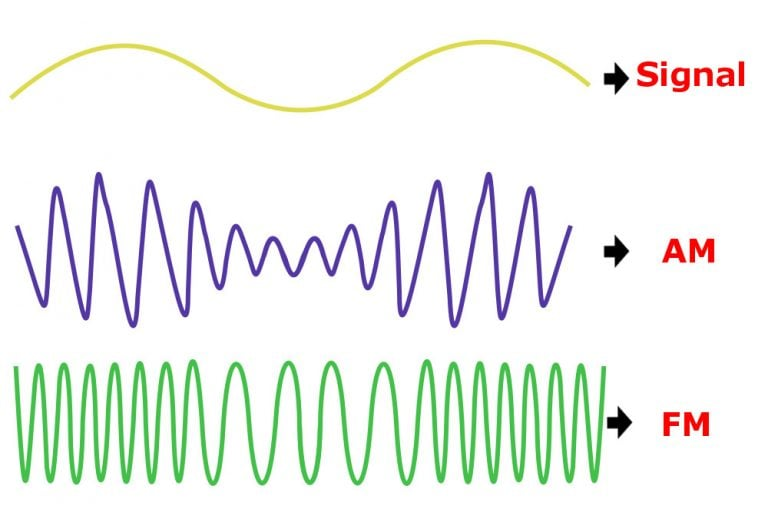

Digitix08's Testsite
P016 Tehnică
Deși asociem AM și FM cu undele lungi, respectiv scurte, denumirea provine de la Amplitude și Frequency Modulated.
Pentru a putea trimite un semnal sonor o undă trebuie modulată - practic graficul funcție de timp al undei are un anumit - să zicem - tipar sau amprentă. In cazul AM frecvența e constantă, amplitudinea fiind purtătoarea de semnal. La FM e invers.
Totuși, lungimile de undă pe care se emite AM sunt de ordinul kHz, de 1000 de
ori mai mare decât FM unde vorbim de MHz. Deci, asocierea cu undele lungi sau
scurte nu e greșită

Dacă AM permite transmiterea pe distanțe mari, cu echipamente mai puțin sofisticate, FM asigură o calitate a sunetului însă doar pe distanțe mici.

Bonus. Există vreo legătură între inginerie și artă?... Va invit să
descoperiți în următoarele 7 minute